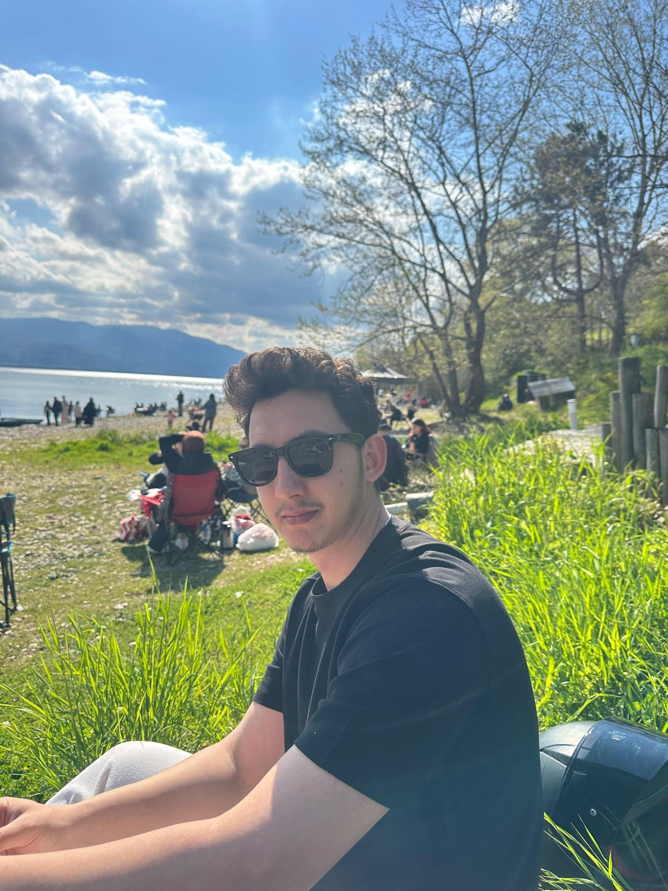

Ben Kimim?
Merhaba, ben Furkan. Bu web sitesi Web Teknolojileri dersi kapsamında hazırlanmıştır. Bu sayfada kendimden, ilgi alanlarımdan ve günlük hayatta yapmaktan hoşlandığım aktivitelerden bahsedeceğim.
Hobilerim
Bilgisayar ile ilgilenmek, yeni teknolojileri öğrenmek, müzik dinlemek, film izlemek ve farklı konularda kendimi geliştirmek hobilerim arasındadır.
Sevdiğim Etkinlikler
Arkadaşlarımla vakit geçirmek, gezmek, spor yapmak ve yeni yerler keşfetmek sevdiğim etkinliklerdendir.
Medya Alanı
